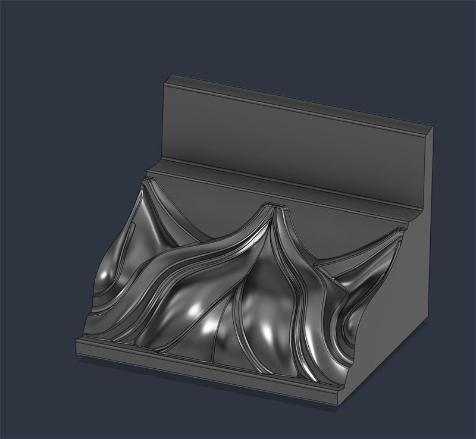

Historische Zierleisten
Die ornamentierten Zierleisten eines historischen Gebäudes mussten neu gefertigt werden. Für eine Reparatur oder eine einfache Kopie waren die Originale zu stark beschädigt. Deshalb wurden die Leisten anhand von 3D-Scans vollständig als saubere CAD-Modelle für die CNC-Fräsung rückkonstruiert.
-

Beschädigtes Original 01Korrosion und abplatzende Farbe hatten große Teile des Ornaments zerstört. Zeichnungen gab es keine.
-

3D-Scan 02Die am besten erhaltenen Abschnitte wurden gescannt. Das Netz erfasst das Ornament, aber auch jede Delle und jede Fehlstelle.
-

Neuaufbau & Abweichungsprüfung 03Eine sich wiederholende Einheit wurde als saubere CAD-Fläche auf dem Scan neu aufgebaut und mit ±0,5 mm gegen ihn geprüft.
-

CAD-Modell in voller Länge 04Die geprüfte Einheit wurde entlang des Profils zu einem vollständigen Modell der ganzen Leiste gemustert.
-

Bereit zum Fräsen 05Der finale Volumenkörper wurde in Fusion für die CNC-Fräsung vorbereitet, damit die neuen Leisten den Originalen entsprechen.